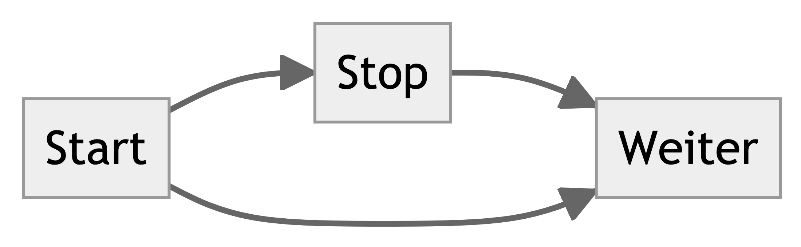
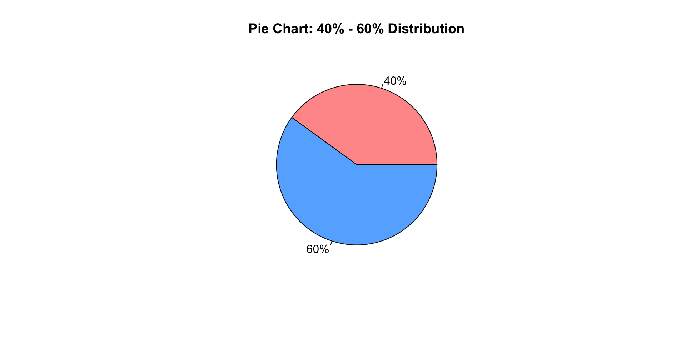

![]()
05:00
Learning Outcomes
Expectation management
besserals Powerpoint, Word, Ilias, SWITCHportfolio etc.schlechter- erfrischend anders!
Learning Outcomes
- Wir erstellen eine Webseite in 5 Minuten.
- Wir schreiben in 7 Sprachen.
Webseite erstellen und publizieren
3 step plan
- Webseite erstellen
- Webseite auf Ilias stellen
- Webseite auf dem Internet publizieren
Inhalte erstellen
In der about.qmd Datei:
1. Yaml
2. Markdown
# Überschrift 1
## Überschrift 2
*kursiv*
**fett**
[Link zur PHBERN](https://www.phbern.ch/)
kursiv
fett

3. HTML
Lösungsvorschlag
3x+2Videos:
4. \(\LaTeX\)
\(\sqrt{\frac{3}{4}}\)
\[\sqrt{\frac{3}{4}}\]
5. Javascript (mermaid JS)

6. R (oder Python, oder OJS)
{r} damit es ausgeführt wird
```r
# Create data
labels <- c("40%", "60%")
sizes <- c(40, 60)
colors <- c("#FF9999", "#66B2FF") # You can change colors as per your preference
# Create pie chart
pie(sizes, labels = labels, col = colors, main = "Pie Chart: 40% - 60% Distribution")
```
7. CSS (in styles.css)
8. BibTeX
Ryan & Deci (2000)
(vgl. Ryan & Deci, 2000, S. 43)
Warnung
Dies bedarf jedoch gewisser Einstellungen in _quarto.yml!
Extra: Slideshow
(wenig getestete Optionen: pdf, docx, pptx)
interessant:
Webseite anpassen in _quarto.yml
Theorie
Datenschutzrecht
Dieses Gesetz gilt für jedes Bearbeiten von Personendaten durch Behörden.
Personendaten sind Angaben über eine bestimmte oder bestimmbare natürliche oder juristische Person.
Urheberrecht
Der Arbeitnehmer ist für den Schaden verantwortlich, den er absichtlich oder fahrlässig dem Arbeitgeber zufügt.
Veröffentlichte Werke dürfen zitiert werden, wenn das Zitat zur Erläuterung, als Hinweis oder zur Veranschaulichung dient und der Umfang des Zitats durch diesen Zweck gerechtfertigt ist.
Das Zitat als solches und die Quelle müssen bezeichnet werden. Wird in der Quelle auf die Urheberschaft hingewiesen, so ist diese ebenfalls anzugeben.
PHBern
An der PHBern entscheiden gemäss Art. 8 Abs. 1 Bst. o des PH-Statuts (PHSt; abrufbar unter www.phbern.ch/rechtssammlung > Ziff. 1.0) grundsätzlich die Institutsleiterinnen und Institutsleiter über die Nutzung immaterieller Arbeitsergebnisse […]
Angebotsentwicklung 2025
Vorgabe 24 – Technologien / Digitale Medien II: Sowohl in den Lernprozessen als auch bei Leistungsnachweisen gelten ausgehend von einem Grundverständnis des Konnektivismus als Teil des Lernkonzepts die Vorgaben Open Source und Open Internet.
Diskussion
Ziel - Innovationspoolprojekt 24/25
Anleitung für Studierende und Dozierende zum Erstellen, Publizieren und Verwalten einer statischen Webseite für den Unterricht
Offene Fragen
- Potential für Studierende?
- Potential für Dozierende?
- Welche Features sind wichtig?
- Potential für Mitarbeiter?
- Welche Lizenz ist die richtige?
Bibliographie
Pädagogische Hochschule Bern. (2017). ECKPFEILER FÜR DIE ANGEBOTS- ENTWICKLUNG 2025 Grundlagendokument. https://qmp.phbern.ch/File/CoreDownload?id=5150
Pädagogische Hochschule Bern. (2023). Geistiges Eigentum Merkblatt (Fassung vom November 2023). https://qmp.phbern.ch/File/CoreDownload?id=5913&filename=Merkblatt%20Geistiges%20Eigentum.pdf&langId=1
Ryan, R. M., & Deci, E. L. (2000). Self-determination theory and the facilitation of intrinsic motivation, social development, and well-being. American Psychologist, 55(1), 68–78. https://doi.org/10.1037/0003-066X.55.1.68
Wiederverwendung
Zitat
Bitte zitieren Sie diese Arbeit als:
Conrardy, R., & Conrardy, R. (2024, March 18). Inhalte effizient
onlinebringen. University of Teacher Education Bern. https://phbern-rconrardy.github.io/lerngelegenheiten/